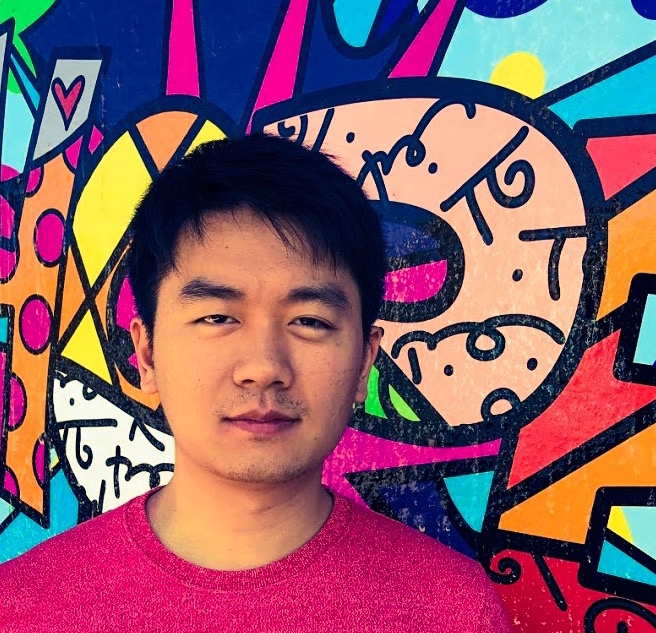

I lead teams across research, product, and engineering building agents that work over long horizons: how they research, remember, and improve themselves. We carry that research into products used by millions.
From research to production
Agents that Research
Developed Test-Time Diffusion Deep Researcher, which refines drafts like diffusion denoising. Powering Gemini Deep Research (Enterprise & Max), featured on Alphabet’s Q1 2026 earnings call.
Agents that Remember
Launched MemoryBank, long-term memory that lets agents recall and reflect on past interactions, in Gemini Enterprise and BigQuery, highlighted at Google Cloud NEXT 2026.
Agents that Collaborate
Integrated Heterogeneous Swarms, which learns how multiple LLMs divide roles, into Gemini Enterprise Agent Designer, announced by the Google Cloud CEO.
Research Agenda
Today's agents are strong at short tasks but weak at getting better over time. Our teams focus on what it takes to close that gap:
- Environments are the bottleneck. Agents can only learn from the worlds we give them, and most of those worlds are static. EnvHarness turns static data and tools into interactive environments that agents can learn in.
- Experience should transfer. Agents should carry reasoning strategies and skills from one task to the next, learning from their failures as well as their successes. That's the idea behind ReasoningBank and SkillOS.
- Self-improvement has to stay bounded. Once agents improve their own harnesses, the hard problem is keeping that improvement stable, measurable, and under human oversight. RRSI regularizes the loop so the agent gets better without drifting.
I've worked on deep learning since my PhD at UC San Diego, advised by Zhuowen Tu with mentorship from Simon Osindero, where my work on Deeply-Supervised Nets later received the AISTATS 2025 Test-of-Time Award. I then joined the AI Research Group at Magic Leap with Andrew Rabinovich, and later Apple, where I launched foundational features for ARKit (now powering Vision Pro) and published the group's first-ever research paper, at CVPR (featured by Apple ML Journal).

Selected Talks

Keynote at The Google School for Leaders 2026, on turning research into product impact.


Agent Fundamentals, Expo Talk at NeurIPS 2025, on deep research, memory, and multi-agent systems in Gemini Enterprise.
Selected Papers
RRSI: Regularized Recursive Self-Improvement of Agent Harnesses
Agents that improve their own harnesses, with regularization that keeps the loop stable. arXiv 2026 · Paper · Project Page · CodeEnvHarness: Awakening Static Worlds for Agent Learning
Turns static data and tools into interactive training environments for agents. arXiv 2026 · Paper · Project Page · CodeSkillOS: Learning Skill Curation for Self-Evolving Agents
Learns how a self-evolving agent should curate its library of reusable skills. NeurIPS 2026 · PaperReasoningBank: Scaling Agent Self-Evolving with Reasoning Memory
Distills reusable insights from an agent's successes and failures. ICLR 2026 · Paper · Code · Google AI Blog · Featured in VentureBeat and Andrej Karpathy's interviewDeep Researcher with Test-Time Diffusion
The research agent behind Gemini Enterprise Deep Research and Gemini Deep Research Max. arXiv 2025 · Paper · Google AI Blog · Featured in VentureBeatBudget-Aware Tool-Use Enables Effective Agent Scaling
Scaling agents under explicit tool and compute budgets. COLM 2026 · Paper · Code · Featured in VentureBeatDistilling Step-by-Step! Outperforming Larger Language Models with Less Training Data and Smaller Model Sizes
Small models trained on LLM rationales outperform much larger LLMs using less data. ACL 2023 · Paper (Findings) · Code · Google AI Blog · Google ACL 2023 SpotlightDeeply-Supervised Nets
Adds supervision to hidden layers to train deep networks more effectively. AISTATS 2015 · Paper · Code · Test-of-Time Award, AISTATS 2025 (slides)NIPS 2014 DL Workshop · Paper · Oral Presentation
Honors & Awards
Test-of-Time Award at AISTATS 2025
Google Spotlight Award at ACL 2023
Oral: NAACL 2025, ACL 2021, NIPS 2014 DL Workshop
Google Spotlight Award at ACL 2023
Oral: NAACL 2025, ACL 2021, NIPS 2014 DL Workshop
Academic Service
Reviewer: NeurIPS, ICML, ICLR, ACL, NAACL, EMNLP, COLM, CVPR, ICCV, ECCV, BMVC, PAMI, IJCV, JMLR
Outstanding Reviewer: CVPR 2019, BMVC 2019
Organizer / PC: SIGKDD 2025 AI4SupplyChain, CVPR 2020 CV4AR/VR